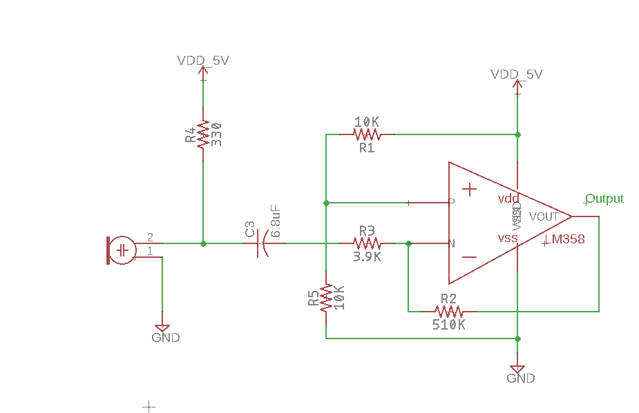

Lab 2 FFT and Schmitt Trigger Circuit
In this lab, we built a microphone amplifier and filter circuits to detect the whistle blow signifying the beginning of the robot mapping competition, and the frequency of the tone is 950 Hz. We also built the Schmitt trigger circuit to free up the analog pins.
- Materials Used:
- 1 Arduino Uno
- 1 USB A/B cable
- 1 Microphone
- 1 LM358 Op-Amp
- Various resistors
- Various capacitors
- 1 Solderless breadboard
Part I: FFT
1. We started the lab by testing the microphone. We built the simple microphone circuit in the lab handout and checked if the microphone was picking up any sound. A picture of the microphone circuit is shown below. (The resistor value we used is 330 ohms and the capacitor value we used is 6.8uF.) We found that the microphone was picking up sound, but the amplitude was very small. It was close to 5mV. Therefore, our next step was to build an amplifier circuit to amplify the signal.

2. The picture below shows the amplifier circuit that we built in lab. It is an inverting amplifier. The gain for this amplifier circuit is R2/R3, which is 131. Resistor R1 and R5 together act as a voltage divider and set a DC offset of 2.5V. The Arduino analogRead function can only measures signals from 0 to 5V. So, we created this DC offset to make sure that the analogRead function is reading a proper input.
3. We tested the amplifier circuit and it worked. It outputs a sine wave even though it is not a perfect one. Also, limited by the quality of the microphone, we needed to hold the signals very close to the microphone in order for the amplifier circuit to function properly. We used the oscilloscope to display the output waveform of the amplifier circuit. We knew that the input signal to the amplifier circuit from the microphone is about 5mV, and the gain is 131. Therefore, we should expect to see about 655mV of output. The picture below shows the output waveform of our amplifier circuit, which was what we expected it to be.

4. We also used the FFT function on the oscilloscope to test our amplifier circuit. And the video below shows our amplifier amplifying signals of different frequencies. One can see that there is an obvious peak correponding to the frequency coming out from the frequency generator.
5. After we got the amplifier to work, we then moved on to make a filter circuit. Originally, we wanted to build a bandpass filter. The break frequencies for high pass and low pass filter are then same, which is 1/(2*pi*R*C). We wanted the pass band to be from 884Hz and 1061Hz. Therefore, we chose the values of capacitors and resistors accordingly. (For the high pass filter, the R is 1.8K, and the C is 0.1uF; for the low pass filter, the R is 1.5K, and the C is 0.1uF.)
6. However, the bandpass circuit didn’t work. We built a high pass filter to the input of the amplifier and a low pass filter to the output of the amplifier. The high pass filter somehow killed the signal from the microphone. We were not exactly sure why this happened. At the end, we decided to simply make a high pass filter at the output of the amplifier to filter out the low frequency human voice and background noise. The schematic below shows our amplifier circuit with a high pass filter.

7. We then tested the circuit using the oscilloscope. Looking at the singal before and after the high pass filter, we could clearly see that the low frequency signals are getting filtered because the amplitudes of the low frequency signals got reduced significantly. The video below shows the output signals displayed on the oscilloscope before and after the installation of the filter.
8. As a way to debug our filter circuit, we tested the low pass and high pass filter separately using the oscilloscope. We found out that the first order passive filters didn’t work quite well. The signals didn’t drop to zero immediately after the break frequency. The chart below shows the lab data for both the high pass and low pass filter. After we consulted with Professor Shoaran on Friday meeting, we realized that our circuit still has gains after the break frequency. The only way to get a sharper roll off at break frequency is to make a second order filter. The data we collected on the performance of the low pass and high pass filter are shown below. We can see that the amplitudes drop to half of its original at 600Hz for high pass filter and at 1600Hz for the low pass filter. So high pass and low pass filter works, but they are not very good filter.

9. After we finished building the amplifier circuit with the high pass filter, we were ready to test the FFT using the Arduino. We started by using the fft_adc_serial example code provided by the FFT library. Then we ran the program and plotted the data using Excel. However, when we plotted out the output, we found out that the 950Hz frequency fell in the 6th bin, which was not what we expected to be. Because the FFT is running at a 9600Hz, and the sample size is 256. This means that each bin has a width of 9600/256=37.5Hz. Therefore, the 950Hz signal should be in the 25th bin. After talking to people from other groups, we found out that our FFT was sampling at a higher frequency than 9600Hz, which was the reason why the 950Hz was in the 6th bin instead of the 25th bin. After changing the prescaler of the ADCSRA to 128 in the code, we got correct FFT analysis from the Arduino.The chart below shows the FFT analysis of three different frequencies using the data from the Arduino serial port.

10. Finally, we modified the code in fft_adc_serial so that it will print out “950 detected” when the 950 frequency is heard and print out “not detected” otherwise. The video below shows the 950Hz signal detection. And our code for the FFT analysis is also shown here.
Part II: Additional Circuit---Schmitt Trigger
1. For our additional circuit, we made a Schmitt trigger with positive feedback. We chose to do this in order to free up 2 analog pins at the expense of 2 digital pins, since there are far more digital pins than analog pins. The Schmitt Trigger allows us to read the value of the line sensors as a digital value rather than an analog value. The output of the circuit is a ‘0’ if the line sensor is above black and a ‘1’ if it is above a white line.
2. The main components of the circuit are the op-amp, the line sensor input, which goes into the inverting input, and the 3 resistors. Vref was just 5V and Vout was the output (0 or 1). We used a multimeter to test the voltages outputted by the line sensors when over black or white and then used those values as the lower (~3V) and upper (~4V) thresholds. If the voltage outputted by the line sensor is below 3V, the value of Vout changes, and when the voltage is greater than 4V, Vout with change back. The upper/lower thresholds are there to make the transition smoother so that spikes in voltage do not affect the transitions as much. In order to achieve these thresholds, we calculated the resistor values. We discovered that the resistor going into the inverting input should be approximately 3 times the value of the other 2 resistors, which should be the same resistance. We chose to use 10K and 33K Ohm resistors, which have the same effectiveness in classifying whether or not the robot is over a white line. The circuit diagram is shown below.

3. This video below shows our working Schmitt trigger circuit.It will output a "1" when the line sensors detect the white line, and it will output a "0" when the line sensors detect the black area.